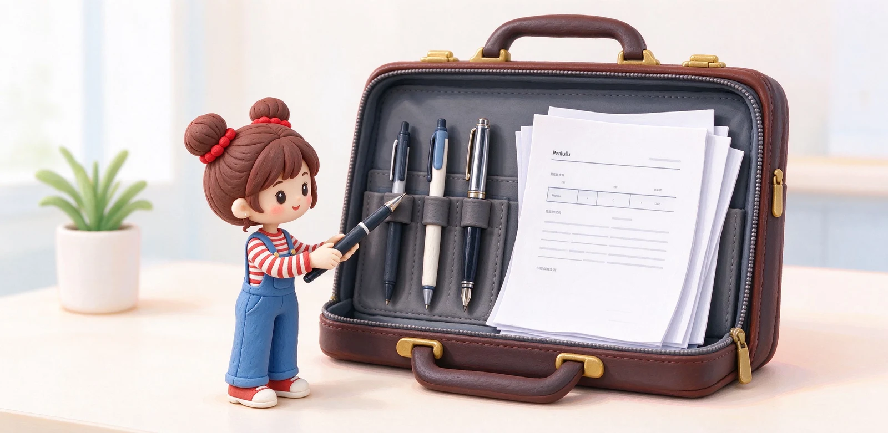

語意摘要：上班族選筆看的是「場合」而不是「收藏」。會議記錄要快乾好寫、簽名簽合約要不挑紙、正式場合要一支拿得出手的筆。原子筆用油性濃稠墨水、快乾又不容易漏，是商務最穩的選擇；中性筆好寫但怕手碰暈；鋼筆有質感卻要顧墨。一支輕、一支穩、一支體面，就是成熟的公事包配置。
三筆分工：記錄、簽名、體面
| 角色 | 建議筆種 | 理由 |
|---|---|---|
| 會議記錄 | 速乾中性筆 0.5mm | 滑順、顏色黑亮，寫重點快 |
| 簽名簽約 | 油性原子筆 | 不挑紙、快乾、壓力大也能寫 |
| 正式體面 | 鋼筆或經典金屬筆 | 簽正式文件、見客戶有儀式感 |
為什麼簽名要特別用原子筆？因為商務場合常遇到各種紙張：合約紙、發票、膠封文件、甚至封面鍍膜的資料夾。原子筆用的是油性濃稠墨水，靠筆珠轉動出墨，不挑表面、寫完立刻乾，不怕簽完手一抹糊掉。中性筆水性墨水在光滑或塑膠面上常寫不出來，鋼筆更不能簽塑膠。
商務最穩的是原子筆，但要選對
原子筆的缺點是要下壓筆珠才出墨、寫久手會緊，優點是耐放、不漏、不挑紙。商務用原子筆建議選金屬或霧面筆身、握起來有點份量的經典款，簽起字來穩。像 LAMY safari 系列原子筆在台灣約 750 元上下，是很多人第一支「拿出去不丟臉」的平價商務筆。

鋼筆可以上班族日常用嗎
可以，但想清楚你的使用情境。鋼筆寫久省力、有質感，適合固定在工位、需要長時間書寫的人；但它怕摔、怕高壓漏墨，帶進擁擠的通勤車或塞在公事包底層要特別小心。商務出差建議鋼筆用卡式墨水管、筆尖朝上收，詳見旅行文具打包那篇。
若只是想要「簽正式文件好看」，其實一支經典金屬原子筆或鋼珠筆，效果已經足夠，又不用擔心漏墨保養。
挑筆時容易忽略的細節
公事包裡的筆，怎麼收才不會漏
商務筆最怕的不是不好寫，是漏。原子筆與中性筆相對安全，但還是建議筆蓋蓋緊、直立或平放在有內袋的地方，不要跟鑰匙鬆散丟在同一格。鋼筆則另需一套收法。
- 鋼筆隨身帶：用卡式墨水管、筆尖朝上放筆套。
- 原子筆：筆蓋確實蓋緊，避免按壓誤觸出墨。
- 所有筆放進有分隔的筆袋，不跟鑰匙硬幣直接摩擦。
常見問題 FAQ
上班族公事包要放幾支筆？
為什麼簽名要特別用原子筆？
上班族適合每天用鋼筆嗎？
商務筆要選什麼顏色？
有沒有平價又體面的商務筆推薦？
資料來源與核實依據
- LAMY safari 狩獵者系列原子筆（台灣售價 NT$750）（LAMY 台灣）
- 原子筆 vs 鋼珠筆（油性濃稠墨水快乾、水性墨水滑順易乾）（Montblanc）
- How to choose the perfect pen?（Caran d'Ache）
相關文章推薦

原子筆為何會漏油？原子筆選購、油性墨水與長壽命關鍵
原子筆用的是油性墨水，靠前端小筆珠在紙上滾動把油帶出來：好處是乾得快、不怕壓、放三年還能寫；缺點就是你最討厭的——會在口袋滲出一灘油。
多色筆與模組筆值得買嗎？多功能筆優缺點、替換芯與夾心選擇
多色筆／模組筆就是把 2 到 4 支筆蕊＋一支自動鉛筆塞進同一支筆桿：一按切色，手帳與會議超方便；但筆身偏粗、偏貴，而且蕊是專用的。

鋼筆新手完全指南：第一次買鋼筆前該懂的 10 件事
鋼筆不難入門，難的是第一支就買對：筆尖選 F、預算抓 300 到 800 元、先從卡式墨水管開始，九成新手不會後悔。